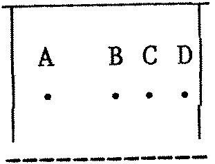

80-Bus News |
July–August 1984 · Volume 3 · Issue 4 |
| Page 24 of 43 |
|---|
There must be a fair number of Nascom 1 owners who have wondered how to connect up a series of Licon keys in the 10 spare holes in the mounting frame so that they actually do something useful. Compared with the Nascom 2 keyboard, the original Nascom 1 keyboard lacks the following keys:
Graphics, Cursor Home, Cursor Up, Down, Right and Left, Control, right and left square brackets and a Shift key next to the ‘Z’ key.
Provision of the facilities offered by these would make many aspects of the Nascom 1 a great deal more user-friendly, particularly when screen-editing facilities are required or supported as in Nas-Sys or Naspen, for example.
A short article by Derek Brough in INMC80 issue 2 gave details of the connections for an additional Shift key but there were still 9 holes to fill in on the keyboard. I acquired some keys and tops from B & L Micros (Lucas/Nascom were a bit sniffy about orders less than £25); new Licon keys are a bit pricey (about £1.50, tops about 60p but Nascom dealers may have some ex-equipment, or you may be able to acquire a defunct Nascom keyboard and carefully (with a solder sucker and patience), extract what you need. You will also need 1 each of 22R, 1K and 2K2 ohm 0.25 watt 5 % resistors and some fine, PVC insulated wire (NOT enamelled). Note that this modification will nullify any guarantee on the keyboard and DONT attempt it unless you have a steady hand. Licon keys must be used – the usual keyboard ‘N.0.’ switch won’t work in this circuit. After the conversion the keyboard will be equivalent in its functions to a Nascom 2. A short article by David Pears dealing with this keyboard appeared in INMC80 issue 5 and shows the majority of the ‘new’ keys connected to bit D6 of the data bus and their relationship to the driver lines from the 74145 (IC 5 on both types of board).
There were at least 2 issues of keyboard – issue A boards have tracks running very close to some of the new key pins which will have to be cut and re-routed as necessary but there are convenient gaps in all the right places on the issue B boards. The issue letter is in the top left hand corner of the underside of the board next to the Reset key. Having turned the board over to find out its issue letter (and gender), arrange it so that the space bar is nearest you and place a ruler along the pins of the top (numeric) keys. Draw a line about 2″ long at the left-hand end with a fine point indelible marker – with luck this line will enable you to locate the pin positions for the square bracket keys! Draw a similar line 1″ long on the right hand end of the next (QWERTY) row of keys. The third row needs a 1″ line on the left hand and right hand ends of this (ASDF) row. Another 1″ line on the right hand end of the ZXCV row follows and finally a line on either side of the Space bar pins, exactly 0.75″ below the ZXCV row, extending 4.5″ either side of the key pins.
If you look at the base of a Licon key, you will find that the terminal pins are assymetrically arranged, as in the diagram:
| Page 24 of 43 |
|---|